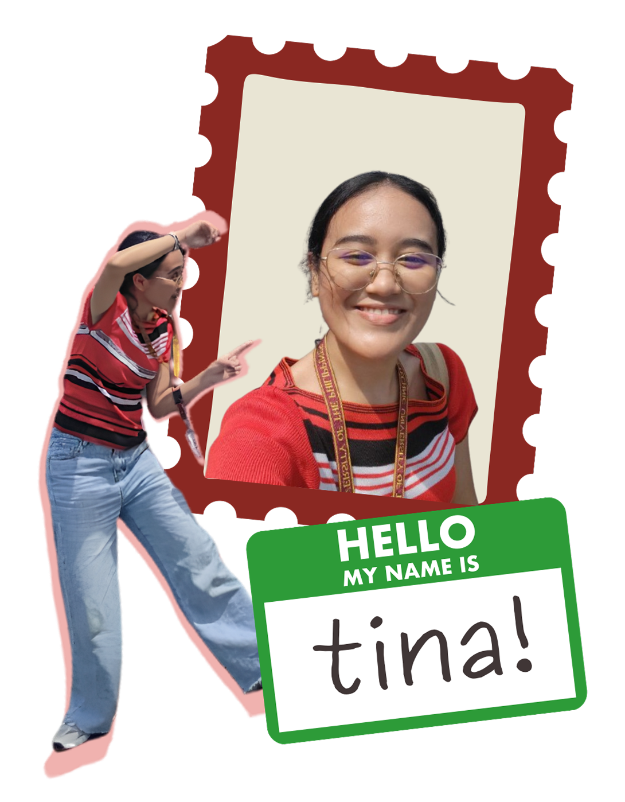

welcome!!!
I am Ma. Kristina L. Cas, a 2nd year Computer Engineering student.
This space serves as my professional repository for my On-the-Job Training achievements at National Telecommunications Commission (NTC)—curating my OJT documents, industry experience, and the daily insights that shape my technical foundation.